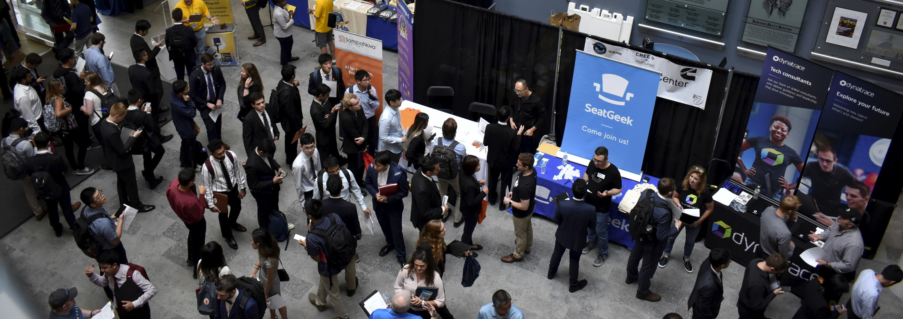

Resources available to University of Michigan students, particularly those in the School of Information (UMSI), to support their academic, wellness, and community needs.
Available Resources
Academic Resources: Tutoring, writing assistance, disability services, and library access.
Health and Wellness Resources: Mental health support, counseling, food access, and wellness services.
Community Building Resources: Supports inclusivity through organizations like MESA, Spectrum Center, and First-Generation Student Center.
Additional Resources: Support for women, international students, and student caregivers.
Emergency Contacts: 24/7 hotlines for mental health, safety, and sexual assault support.
Centralized platform for students in the Bachelor of Science in Information (BSI) Program at the University of Michigan.
Key Resources
Key Dates: Important deadlines for Winter 2025
Academic Advising: Information on meeting advisors, optimizing advising sessions
Degree Requirements: Detailed requirements for BSI degrees by cohort
Course and Registration: Guidance on registering for classes, tracking degree progress
Student Support: Resources for academic success, tutoring, policies, and forms
Contact Information: Help with identifying appropriate contacts for questions
Study Spaces on Campus
Academic Success Strategies
Planning Tools and Resources
Course Planning Tools
Use our interactive course planning worksheet to map out your semester. Schedule a meeting with your advisor to optimize your course load and ensure you're on track for graduation.
Study Group Formation
Connect with classmates through our UMSI Study Group Portal. Regular study groups meet in the UMSI collaboration spaces and virtually through our dedicated Discord channels.
Work-Life Balance Workshop Series
Monthly Workshops Help Students Find Balance
Join our monthly workshops covering topics like:
Setting realistic goals and boundaries
Managing project deadlines
Creating effective study schedules
Using productivity tools and techniques
Campus Learning Resources
Library and Research Support
Hatcher Graduate Library - Your Research Hub
UMSI students have access to world-class learning resources across campus. Our partnerships with various academic support units ensure you have the tools needed to excel in your studies.
Library Research Support
Meet with our dedicated UMSI librarian for specialized research consultations. Access extensive digital collections and specialized databases for information science research.
Professional Development
Career Planning

Annual UMSI Career Fair Connects Students with Employers
Our Career Development Office (CDO) provides comprehensive support to help you achieve your professional goals. From internship searches to full-time positions, we're here to guide your career journey.
Career Development Resources
Internship Opportunities
Access our exclusive UMSI job board featuring positions from top tech companies, cultural institutions, and research organizations. Get personalized internship search strategy sessions with our career counselors.
Resume Building Workshops
Monthly workshops cover:
Crafting compelling experience descriptions
Tailoring resumes for specific industries
Highlighting technical skills effectively
Creating professional portfolios
Alumni Mentorship Program
Connect with successful UMSI alumni working in your field of interest. Our mentorship platform facilitates both short-term informational interviews and long-term mentoring relationships.